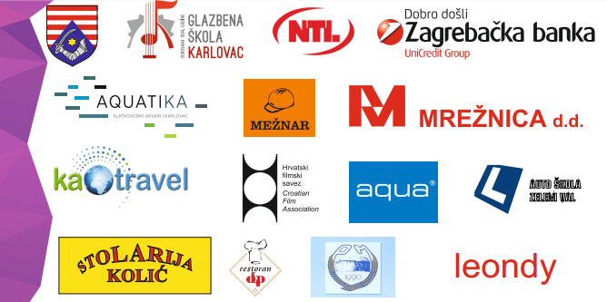

DugaResaFest 2017.: 05.05. – 07.05.2017.
Duga Resa Fest 2017. je manifestacija, glazbenog karaktera za djecu i mlade koji se održava u Dugoj Resi već četvrtu godinu za redom. Prve dvije godine provodilo se natjecanje u pjevanju osnovnih škola Karlovačke županije, u trećoj godini provedbe premijerno se krenulo sa natjecanjem u trajanju od dva dana. Premijerno je održano natjecanje mladih u sviranju klasičnih instrumenata iz cijele Hrvatske. U četvrtoj godini natjecanja uvodimo edukaciju svih prijavljenih sudionika sa Radionicom solo pjevanja i scenskog nastupa te Slikarsko kreativnom radionicom DRF 2017. vikend uoči glazbene manifestacije.
U sklopu manifestacije održati će se razne radionice i edukacije za prijavljene sudionike:
Radionica solo pjevanja – provoditelj aktivnosti Glazbena škola Karlovac
Radionica scenskog nastupa – provoditelj aktivnosti Glazbena škola Karlovac
Slikarsko kreativna radionica DRF 2017. – provoditelj aktivnosti Vesna Brezović
Edukacija Tehnika boravka u prirodi: podizanje šatora, paljenje vatre, izrada zaklona, druženje uz logorsku vatru – provoditelj aktivnosti Odred Izviđača „Spider“
Edukacija Uvod u planinarstvo: Planinarenje, ekologija i zaštita prirode, orijentacija u prirodi – provoditelj aktivnosti HPD „Vinica“ Duga Resa
Radionica izrade dokumentarnog filma: provoditelj aktivnosti Igor Bezinović
Opći cilj projekta je poboljšanje kvalitete života lokalne zajednice osobito djece i mladih kroz unapređenje kapaciteta mladih Udruge „Agora“ i oživljavanje kulturnog i društvenog života raznim aktivnostima. DugaResaFest 2017. ima za cilj povećati kulturnu ponudu u lokalnoj zajednici i aktivirati djecu i mlade kroz kreativno izražavanje, kulturu, umjetničke i glazbeno scenske i obrazovne aktivnosti, potaknuti kreativnost, natjecateljski duh i kreativno provođenje slobodnoga vremena. Svakako im želimo omogućiti sadržaje koji će ih usmjeriti na aktivno i zdravo provođenje slobodnog vremena kako u njihovom danu ne bi bilo mjesta za drogu, alkohol i nasilje. Također reduciranjem sati provedenih pred tv ekranima i računalima želimo utjecati na njihov zdrav rast i razvoj.
Kroz organiziranje DugaResaFest-a 2017., tj.radionicu izrade dokumentarnog filma, radionicu solo pjevanja i scenskog nastupa, Slikarsko kreativne radionice DRF 2017., Art Zonu, DRF Classico i DRF Euphoriu, cilj je promovirati i podržati glazbeno stvaralaštvo djece i mladih na nacionalnoj i međunarodnoj razini, te ujedno promovirati Grad Duga Resu kao centar tih aktivnosti. DugaResaFest 2017. je manifestacija koja se održava s ciljem poticanja razvoja talenata djece kroz likovno i umjetničko stvaralaštvo, glazbu, ples, pjevanje i koreografiju te otvoriti prostor za prezentiranje istih.
Radionica izrade dokumentarnog filma: vikendi 13., 14., 20., 21. i 27.05.2017.
Radionica solo pjevanja i scenskog nastupa: 19.04.2017.
Slikarsko kreativna radionica DRF 2017.: 29.04. – 30.04.2017.
Art Zona DRF 2017.: 05.05.2017.
DRF Classico: 06.05.2017.
DRF Euphoria: 07.05.2017.
Zid događanja DRF 2017.
Cilj ovog festivala je dati djeci priliku da dođu na drugu stranu ekrana te uz mnoštvo obaveza koje im je nametnuo sustav obrazovanja, svoje talente, skrivene želje, ljubav prema glazbi, plesu, pjevanju, koreografiji, pokažu, dokažu se i za to budu nagrađeni.
Novosti u 2017.
Za razliku od prethodnih godina po prvi puta, DRF 2017. je otvorila vrata i školama van karlovačke županije. Na ovogodišnjem DRF-u uz karlovačke škole sudjeluju i škole iz Rijeke, Zagreba i Osijeka.
U četvrtoj godini natjecanja uvodimo edukaciju svih prijavljenih sudionika sa Radionicom solo pjevanja i scenskog nastupa (19.04.2017., srijeda), te Slikarsko kreativnom radionicom DRF 2017. vikend uoči glazbene manifestacije (29.04. – 30.04.2017.).
DRF Art Zona na kojoj će se predstaviti radovi sudionika nastali na kreativnoj koloniji 2017. te će biti odabrana nekoliko najboljih, koji će se prodati putem aukcije/nadmetanja, a prikupljeni prihod ide u humanitarne svrhe. Premijerno će biti prikazan dokumentrni film nastao na radionici izrade dokumentarnog filma.
Zatim slijedi manifestacija, subotnji DRF Classico 2017. na kojem će se natjecati mladi izvođači na klasičnim instrumentima u slobodnoj ili standardnoj izvedbi iz cijele Hrvatske. Nedjelja će ponuditi natjecanje osnovnoškolaca iz cijele Hrvatske u pjevanju pod nazivom DRF Euphoria 2017. Najboljeg izvođača/izvođačicu ocjenjuje stručni žiri, a glasovanje se provodi javno po uzoru na Eurosong.
Uz navedene radionice tu je još radionica dokumentarnog filma koja će se održati u suradnji sa Hrvatskim filmskim savezom (vikendi 13., 14., 20., 21. i 27.05.2017.), te edukacije Tehnika boravka u prirodi i Uvod u planinarstvo u suradnji sa Odredom izviđača „Spider“ i HPD „Vinica“ Duga Resa.
Prijavljene škole
|
Organizacijski tim
|
DUGA RESA FEST 2017 ODRŽAVA SE U ORGANIZACIJI UDRUGE ZA MLADE AGORA I GRADA DUGA RESA
Medijski pokrivaju TV4Rijeke i radio Mrežnica
